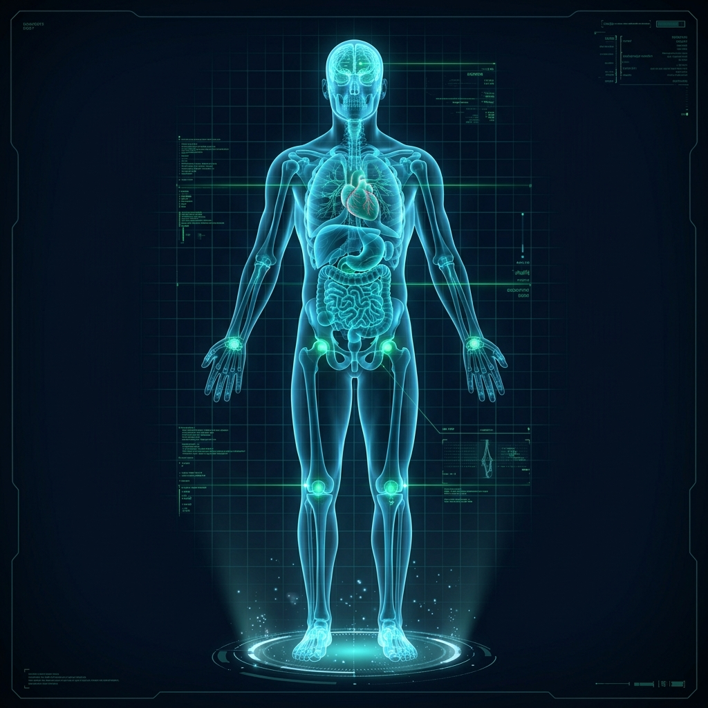

المساعد الطبي الذكي الأول في الشرق الأوسط
ابحث عن أي مشكلة صحية...
وسيجد لك AI طبابة أفضل الحلول
استشر طبيب طبابة الذكي فوراً بلغة مبسطة، حلل أعراضك وشكواك بدقة، تعرف على أنسب التخصصات، واحجز مع نخبة الأطباء المعتمدين مع تفعيل ملفك الصحي الشامل.
أو اختر من مجالات البحث الأكثر شيوعاً:

مسح تفاعلي لمواضع الألم
انقر على أي عضو للتشخيص الفوري
72 bpm
إيقاع قلبي وضغط 120/80
انقر مباشرةً على العضو أو المنطقة التي تؤلمك في المجسم
16 موضع سريري نشط
جلسة الفحص السريري مع المساعد الذكي
استجابة سريرية فورية مدعومة ببروتوكولات الفحص العالمية
...
طبيب طبابة الذكي:
جاري تحليل شكواك السريرية ومراجعة الأعراض...
أفضل الأطباء المعتمدين والمناسبين لحالتك:
احفظ استشارتك وفعل ملفك الصحي المتكامل مجاناً 🌟
احتفظ بهذه الخطة الطبية، فعل متتبع أدويتك اليومي، وتعرف على مؤشر عافيتك (Health Score) برقم هاتفك فقط.